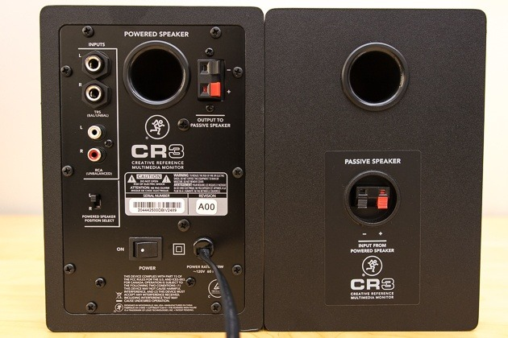

How to connect speakers to the board
- Find a XLR Cable or a 1/4" cable
- Make sure the channel you want to plug into is turned down on the board
- Plug the XLR or 1/4" cable into the board
- Plug the other end into the speakers input
- To daisy chain speakers, connect the output of the master to the input of the slave
- Turn on the speaker before you raise the volume on the board
The tutorial specified above also applies to connecting mics and other inputs to the board